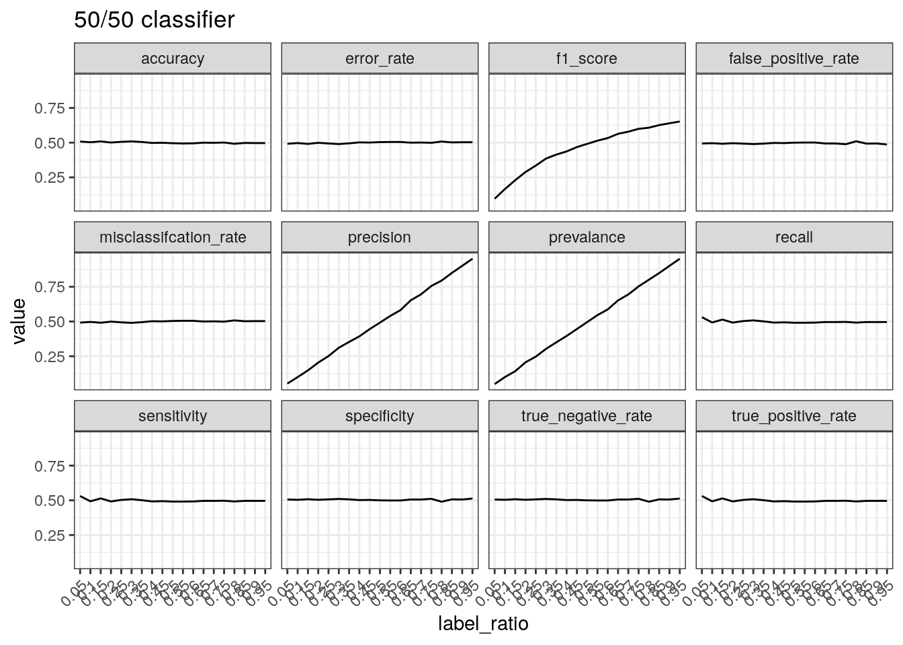
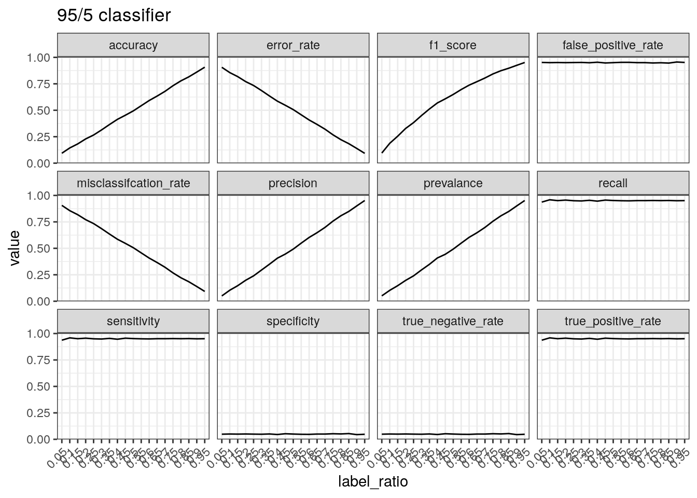

Performance of binary classifiers
2023-03-10
Last updated: 2023-03-10
Checks: 7 0
Knit directory: muse/
This reproducible R Markdown analysis was created with workflowr (version 1.7.0). The Checks tab describes the reproducibility checks that were applied when the results were created. The Past versions tab lists the development history.
Great! Since the R Markdown file has been committed to the Git repository, you know the exact version of the code that produced these results.
Great job! The global environment was empty. Objects defined in the global environment can affect the analysis in your R Markdown file in unknown ways. For reproduciblity it’s best to always run the code in an empty environment.
The command set.seed(20200712) was run prior to running
the code in the R Markdown file. Setting a seed ensures that any results
that rely on randomness, e.g. subsampling or permutations, are
reproducible.
Great job! Recording the operating system, R version, and package versions is critical for reproducibility.
Nice! There were no cached chunks for this analysis, so you can be confident that you successfully produced the results during this run.
Great job! Using relative paths to the files within your workflowr project makes it easier to run your code on other machines.
Great! You are using Git for version control. Tracking code development and connecting the code version to the results is critical for reproducibility.
The results in this page were generated with repository version 4df0a4b. See the Past versions tab to see a history of the changes made to the R Markdown and HTML files.
Note that you need to be careful to ensure that all relevant files for
the analysis have been committed to Git prior to generating the results
(you can use wflow_publish or
wflow_git_commit). workflowr only checks the R Markdown
file, but you know if there are other scripts or data files that it
depends on. Below is the status of the Git repository when the results
were generated:
Ignored files:
Ignored: .Rhistory
Ignored: .Rproj.user/
Ignored: r_packages_4.1.2/
Ignored: r_packages_4.2.0/
Ignored: r_packages_4.2.2/
Untracked files:
Untracked: analysis/cell_ranger.Rmd
Untracked: analysis/tss_xgboost.Rmd
Untracked: data/HG00702_SH089_CHSTrio.chr1.vcf.gz
Untracked: data/HG00702_SH089_CHSTrio.chr1.vcf.gz.tbi
Untracked: data/ncrna_NONCODE[v3.0].fasta.tar.gz
Untracked: data/ncrna_noncode_v3.fa
Unstaged changes:
Modified: analysis/graph.Rmd
Note that any generated files, e.g. HTML, png, CSS, etc., are not included in this status report because it is ok for generated content to have uncommitted changes.
These are the previous versions of the repository in which changes were
made to the R Markdown (analysis/bin_class.Rmd) and HTML
(docs/bin_class.html) files. If you’ve configured a remote
Git repository (see ?wflow_git_remote), click on the
hyperlinks in the table below to view the files as they were in that
past version.
| File | Version | Author | Date | Message |
|---|---|---|---|---|
| Rmd | 4df0a4b | Dave Tang | 2023-03-10 | Performance of binary classifiers |
Calculate performance metrics under different scenarios.
Setup
Set theme.
theme_set(theme_bw())Source code for calculating performance measures.
source("https://raw.githubusercontent.com/davetang/learning_r/main/code/table_metrics.R")Set number of cases to use.
num_case <- 10000Function to generate labels.
gen_labels <- function(n, prob, pos = 'yes', neg = 'no'){
factor(ifelse(rbinom(n, 1, prob) == 1, pos, neg), levels = c(pos, neg))
}Testing
Generate data where positive and negative cases are balanced.
truth = gen_labels(num_case, 0.5)
table(truth)truth
yes no
4998 5002 Classifier that predicts yes for every case.
yes_all <- factor(rep('yes', num_case), levels = c('yes', 'no'))
table_metrics(table(truth, yes_all), 'yes', 'no', 'row')$accuracy
[1] 0.5
$misclassifcation_rate
[1] 0.5
$error_rate
[1] 0.5
$true_positive_rate
[1] 1
$sensitivity
[1] 1
$recall
[1] 1
$false_positive_rate
[1] 1
$true_negative_rate
[1] 0
$specificity
[1] 0
$precision
[1] 0.5
$prevalance
[1] 0.5
$f1_score
[1] 0.6666667Classifier that predicts no for every case.
no_all <- factor(rep('no', num_case), levels = c('yes', 'no'))
table_metrics(table(truth, no_all), 'yes', 'no', 'row')$accuracy
[1] 0.5
$misclassifcation_rate
[1] 0.5
$error_rate
[1] 0.5
$true_positive_rate
[1] 0
$sensitivity
[1] 0
$recall
[1] 0
$false_positive_rate
[1] 0
$true_negative_rate
[1] 1
$specificity
[1] 1
$precision
[1] NaN
$prevalance
[1] 0.5
$f1_score
[1] NaNClassifier that predicts yes 95% of the time.
yes_95 <- gen_labels(num_case, 0.95)
table_metrics(table(truth, yes_95), 'yes', 'no', 'row')$accuracy
[1] 0.497
$misclassifcation_rate
[1] 0.503
$error_rate
[1] 0.503
$true_positive_rate
[1] 0.946
$sensitivity
[1] 0.946
$recall
[1] 0.946
$false_positive_rate
[1] 0.952
$true_negative_rate
[1] 0.048
$specificity
[1] 0.048
$precision
[1] 0.498
$prevalance
[1] 0.5
$f1_score
[1] 0.6525042Label ratio
Function to calculate and plot metrics.
test_label_ratio <- function(pred, title = NULL){
probs <- seq(0.05, 0.95, 0.05)
perf <- map(probs, function(x){
truth_ <- gen_labels(num_case, x)
table_metrics(table(truth_, pred), 'yes', 'no', 'row')
})
df <- map_df(perf, function(x) x)
df$label_ratio <- factor(probs)
df <- pivot_longer(df, -label_ratio, names_to = 'metric')
ggplot(
df,
aes(
label_ratio,
value,
group = metric
)
) +
geom_line() +
facet_wrap(~metric) +
theme(axis.text.x = element_text(angle = 45, hjust = 1)) +
scale_y_continuous(breaks = seq(0, 1, 0.25)) +
ggtitle(title)
}Performance of a 50/50 classifier with different ratio of real
labels. Recall that precision is calculated by TP divided
by positive predictions and therefore concerns positive
predictions, i.e. when a positive prediction is made, how often is it
correct? When most of the labels are positive, most of the positive
predictions will be correct resulting in high precision.
test_label_ratio(gen_labels(num_case, 0.50), '50/50 classifier')
Performance of a classifier that predicts positive 95% of the times.
The true positive rate/sensitivity/recall is calculated by
TP divided by the total number of positives.
Therefore, this will be high regardless of the data if a classifier
predicts positive 95% of the time. The precision tells a different
picture because it takes into account the number of predictions made.
Therefore, if there are few positive cases (leading to few
TPs) and a large number of positive predictions, the
precision is low.
test_label_ratio(gen_labels(num_case, 0.95), '95/5 classifier')
Performance of a classifier that predicts negative 95% of the times.
The number of true positives will be low with a classifier that does not
predict many positive cases. This results in a low true positive
rate/sensitivity/recall. Precision can increase with few positive
predictions when the data is mostly positive cases. The true negative
rate/specificity is calculated by TN divided by the
total number of negatives. Therefore if a classifier mostly
outputs negative predictions, the true negative number will be close to
the total number of negatives, resulting in a high specificity.
test_label_ratio(gen_labels(num_case, 0.05), '5/95 classifier')
Summary
Metrics focus on different aspects and therefore should be reported together to paint a full picture of the performance of a binary classifier.
sessionInfo()R version 4.2.2 (2022-10-31)
Platform: x86_64-pc-linux-gnu (64-bit)
Running under: Ubuntu 22.04.1 LTS
Matrix products: default
BLAS: /usr/lib/x86_64-linux-gnu/openblas-pthread/libblas.so.3
LAPACK: /usr/lib/x86_64-linux-gnu/openblas-pthread/libopenblasp-r0.3.20.so
locale:
[1] LC_CTYPE=en_US.UTF-8 LC_NUMERIC=C
[3] LC_TIME=en_US.UTF-8 LC_COLLATE=en_US.UTF-8
[5] LC_MONETARY=en_US.UTF-8 LC_MESSAGES=en_US.UTF-8
[7] LC_PAPER=en_US.UTF-8 LC_NAME=C
[9] LC_ADDRESS=C LC_TELEPHONE=C
[11] LC_MEASUREMENT=en_US.UTF-8 LC_IDENTIFICATION=C
attached base packages:
[1] stats graphics grDevices utils datasets methods base
other attached packages:
[1] forcats_0.5.2 stringr_1.5.0 dplyr_1.0.10 purrr_0.3.5
[5] readr_2.1.3 tidyr_1.2.1 tibble_3.1.8 ggplot2_3.4.0
[9] tidyverse_1.3.2 workflowr_1.7.0
loaded via a namespace (and not attached):
[1] Rcpp_1.0.9 lubridate_1.9.0 getPass_0.2-2
[4] ps_1.7.2 assertthat_0.2.1 rprojroot_2.0.3
[7] digest_0.6.31 utf8_1.2.2 R6_2.5.1
[10] cellranger_1.1.0 backports_1.4.1 reprex_2.0.2
[13] evaluate_0.19 highr_0.9 httr_1.4.4
[16] pillar_1.8.1 rlang_1.0.6 readxl_1.4.1
[19] googlesheets4_1.0.1 rstudioapi_0.14 whisker_0.4.1
[22] callr_3.7.3 jquerylib_0.1.4 rmarkdown_2.19
[25] googledrive_2.0.0 munsell_0.5.0 broom_1.0.2
[28] compiler_4.2.2 httpuv_1.6.7 modelr_0.1.10
[31] xfun_0.35 pkgconfig_2.0.3 htmltools_0.5.4
[34] tidyselect_1.2.0 fansi_1.0.3 crayon_1.5.2
[37] withr_2.5.0 tzdb_0.3.0 dbplyr_2.2.1
[40] later_1.3.0 grid_4.2.2 jsonlite_1.8.4
[43] gtable_0.3.1 lifecycle_1.0.3 DBI_1.1.3
[46] git2r_0.30.1 magrittr_2.0.3 scales_1.2.1
[49] cli_3.4.1 stringi_1.7.8 cachem_1.0.6
[52] farver_2.1.1 fs_1.5.2 promises_1.2.0.1
[55] xml2_1.3.3 bslib_0.4.2 ellipsis_0.3.2
[58] generics_0.1.3 vctrs_0.5.1 tools_4.2.2
[61] glue_1.6.2 hms_1.1.2 processx_3.8.0
[64] fastmap_1.1.0 yaml_2.3.6 timechange_0.1.1
[67] colorspace_2.0-3 gargle_1.2.1 rvest_1.0.3
[70] knitr_1.41 haven_2.5.1 sass_0.4.4